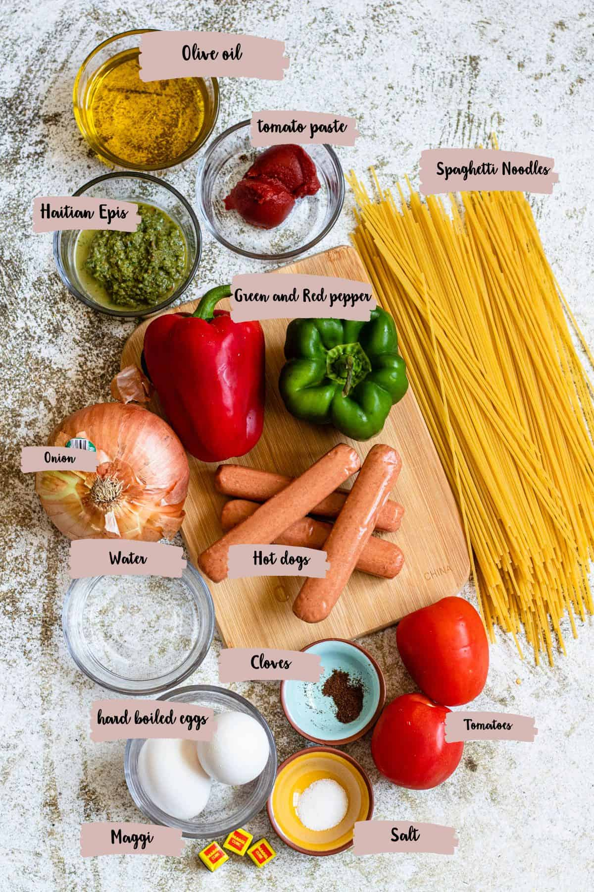
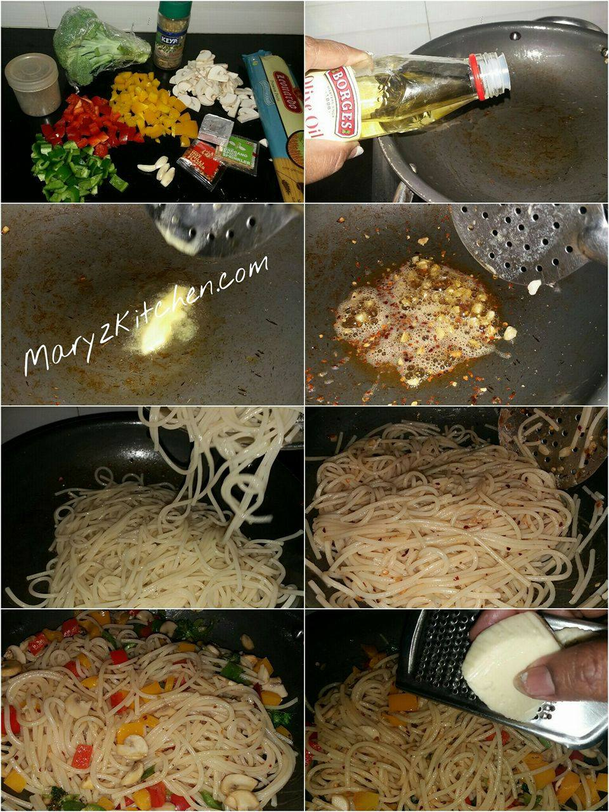
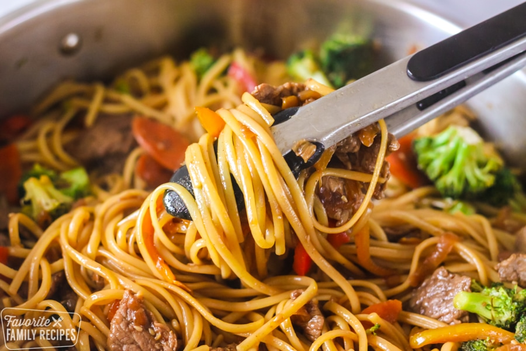
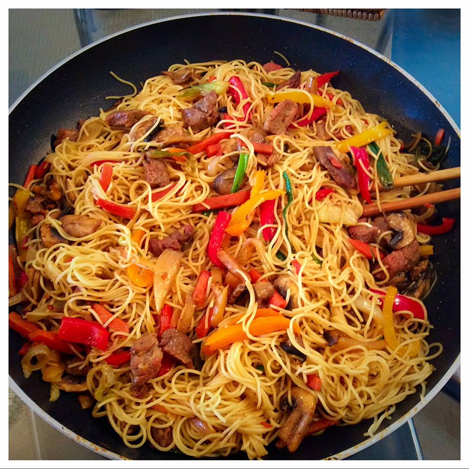

My name is Kehinde Yusuf... I am a foodie! My favourite food is spaghetti, particularly, Stir-fry spaghetti.
I love Spaghetti because it's delicious.
The origin of spaghetti is a somewhat controversial topic, many believed it is italian, some belive it is chinese
Steps used in preparing spaghetti
Ingredients
2 red bell pepper
1 green bell pepper
1 medium sized onion
1 big carrot
½spoonful of thyme
1 spoonful of chopped garlic
½spoonful of thyme
1 spoonful of chopped ginger
½tablespoon curry powder
½tablespoon thyme
1-2 season cubes (depending on your taste)
1/2 pack of spaghetti/pasta
3-4 tablespoonful of vegetable oil
stir-fried spag
Recipe for Stir Fry Spaghetti
Dice/chop the carrot, onion, red bell pepper, green bell pepper, ginger and garlic. Cut or dice them on a flat surface such that each of them is separate (do not mix them).
Put the spaghetti in a pot and boil. Add a spoonful of oil to it and cook it for 10-15 minutes or cook until it is about 70% to 80% done (do not let it soften too much). Bring it down from the fire or cooker and drain it.
Put 3 spoonfuls of oil in your frying pan and add the diced onions and carrot. Cook this for about 2 to 3 minutes under medium heat. Then add the diced green and red bell pepper. Allow it to cook for another 3 to 4 minutes after which you will add the diced ginger and garlic, salt, seasoning cubes, curry powder and thyme (add the seasoning cubes and salt according to taste).
If you want to add stir-fried chicken, you should stir fry the chicken first, separately. Bring the stir-fried veggies down and put another frying pan on the cooker, put 3 to 4 spoonfuls of oil and add the chicken to be fried. Drain the chicken before frying it for about 3 to 4 minutes. Then add it to the stir-fried veggies and put it back on the cooker before proceeding to the next step.
Add the parboiled pasta to the stir-fried veggies and cook for about 5 minutes and stir once in a while as you cook. Your stir fry spaghetti is ready.




Eating Stir Fry Spaghetti
Dish it. Eat it. Enjoy it. You are surely going to love the sight, the aroma and the taste. Stir fry spaghetti is a very delicious dish that can be eaten as a meal at any time of the day: as breakfast, lunch or supper. What makes it special is that it can be prepared in a short time and does not require much strength.